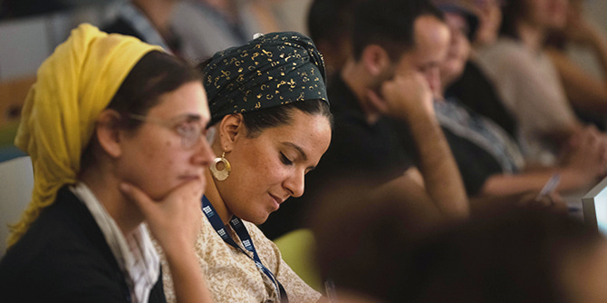

כנס הביטוס בבתי הספר לאמנויות הבמה: מושב ראשון (צילום: סימנים הפקות)
בכנס, שנערך ביוזמת תוכנית מנדל למנהיגות בתרבות יהודית, השתתפו יותר מ-100 אנשי ונשות תוכן, יצירה ואקדמיה, מנהלי מוסדות תרבות, מקבלי החלטות ומנהלים הקובעים את תוכניות הלימודים במגוון רחב של מוסדות בארץ. הכנס התחלק לארבעה מושבים: מהבית אל בית הספר לאמנות; מהחוויה אל התאוריה; יוזמות רב-תרבותיות בהוראת אמנויות הבמה; מהניסיון אל החזון. סדר היום המלא >>
תוכן העניינים
- מה זה הביטוס ומדוע אמנויות הבמה?
- פתיחת הכנס ודברי פתיחה
- מושב ראשון: מהבית אל בית הספר לאמנות
- מושב שני: מהחוויה אל התאוריה: דיון ומחלוקת
- מושב שלישי: יוזמות רב-תרבותיות בהוראת אמנויות הבמה
-
מושב רביעי: מהניסיון אל החזון: עם הפנים לעתיד
- מידע נוסף והרחבה
מה זה הביטוס ומדוע אמנויות הבמה?
את המושג "הביטוס" טבע הסוציולוג והאנתרופולוג הצרפתי מרסל מוס, ולאחר מכן פיתח הסוציולוג הצרפתי פייר בורדייה, שהשתמש בו לתיאור מערכת של התנהגויות נרכשות, אשר קובעות במידה רבה את סיכויי הצלחתו של אדם. על-פי בורדייה, לכל בית, קבוצה, חברה, תחום עבודה או אפילו מחלקה באקדמיה יש הביטוס משלהם, הכולל את סך כל ההעדפות התרבותיות, האסתטיות והאתיות. ההביטוס הוא מלוא ההרגלים, היציבה, שפת הגוף וההתנהגויות שאנו רוכשים באופן מודע ובלתי מודע ומתנהלים בתוכם בחופשיות.
המוסדות להכשרת אמנים הם העומדים בשער ומנסחים את החוק, התרבות והקאנון של עולמות האמנות. הם גם דורשים מהנכנסים בשעריהם לאמץ הביטוס מסוים. אך האם שומרי הסף באמת פותחים את השערים לפני המוזיקאי הצעיר ממעלות תרשיחא? איך ישתנו הרגליה והתנהגותה של רקדנית מתחילה מקריית שמונה המשתלבת בעולם המחול? והאם הקאנון של סטודנט ממזרח ירושלים יובא בחשבון בבית הספר למשחק? השאלות הללו רלוונטיות מאוד לעולם התרבות ולחברה הישראלית – והן שהולידו את כנס "הביטוס בבתי הספר לאמנויות הבמה".

(צילום: סימנים הפקות)
פתיחת הכנס
"בתי הספר לאמנויות מעניקים לסטודנטיות ולסטודנטים שלהם ידע, כלים והשראה. זהו שלב קריטי בעיצוב דמותם של היוצרות והיוצרים לעתיד", פתחה
חן ארצי סרור, מנהלת תוכנית מנדל למנהיגות בתרבות יהודית, את הכנס. "בתוך ההתפתחות המבורכת הזו, חשוב לשאול – מה נשר בדרך? אצל מי? אילו נכסים והרגלים הצליחו לבוא לידי ביטוי ואילו הוחבאו או הושמטו? כמה ביטוי יש לעושר ולמגוון של החברה הישראלית בחומרי הלימוד?" ארצי סרור הוסיפה: "המשתתפים המגוונים בחדר הגיעו לפה בשביל להקשיב לעדויות, להיחשף ליוזמות חדשות, לייצר שיתופי פעולה ולהכיר תאוריות. אני מאמינה שמה שהוביל אתכם להגיע לכאן זו גם התחושה החמקמקה והחשובה כל כך – תחושת האחריות. אני מזמינה אתכם להקשיב בסקרנות, בלב פתוח, אבל גם בביקורתיות מבורכת".
״היתרון הגדול של החברה הישראלית הוא בהון האנושי הרב-ממדי והרב-תרבותי שלנו״, אמר
מישאל ציון, מוביל הכנס וחבר סגל תוכנית מנדל למנהיגות בתרבות יהודית. ״המוסדות להכשרת אמנים הם המקום שבו הדמיון הישראלי המשותף מתעצב לדור הבא, וחשוב שהעושר היהודי והישראלי שלנו יבואו לידי ביטוי במרחבים הללו״. בתחילת הכנס נשאו דברים גם
יעל הס, מנהלת מכון מנדל למנהיגות, ורונן יצחקי, ראש החוג לתנועה באקדמיה למוסיקה ולמחול בירושלים, בוגר תוכנית מנדל למנהיגות בתרבות יהודית.
מושב ראשון: מהבית אל בית הספר לאמנות
המושב הראשון התמקד בחוויית הסטודנטים המגיעים אל בתי הספר והאקדמיות לאמנות, והשתתפו בו בוגרי תוכנית מנדל למנהיגות בתרבות יהודית ומובילי מוסדות תרבות ישראליים: אורלי פורטל, כוריאוגרפית ומורה באקדמיה למוסיקה ולמחול; חנא קובטי, מנכ"ל מרכז פיילי לאמנות ומורה בבצלאל – אקדמיה לאמנות ולעיצוב בירושלים; אוריין שוקרון, מוזיקאי ובוגר האקדמיה למוסיקה ולמחול, ולנה קריינדלין, מנכ"לית תיאטרון גשר.
המשתתפים תיארו את המעבר בין הביטוסים ואת חוויית ההביטוס השסוע – תחושה של אי-שייכות וחוסר מובנות: גם בבית וגם במוסד האקדמי שאליו עברו. אורלי פורטל סיפרה על המעבר מקריית שמונה ללימודי מחול באקדמיה למוסיקה ולמחול בירושלים: "שתקתי, לא פתחתי את הפה, קלטתי. זה פשוט לא משהו שהיה במודע, אני לא דיברתי כמה חודשים. הקשבתי, למדתי את השפה בכיתה". "ככל שהתקדמתי באקדמיה הרגשתי שכשאני חוזר הביתה לשבתות אני מאבד את ההורים שלי", תיאר בכאב אוריין שוקרון, גם הוא בוגר האקדמיה, שהגיע ממעלות-תרשיחא. "אני לא מדבר איתם את אותה השפה. יש לי שפה חדשה, והשפה המשותפת שלנו אבדה".
"בתאטרון, שפה היא הכלי המרכזי שלנו", סיפרה לנה קריינדלין, מנכ"לית תיאטרון גשר, "אבל הבעיה [של מי שמגיע מהביטוס אחר] היא בעצם לא השפה. את המילים אפשר ללמוד ואת המשפטים אפשר ללמוד. האתגר הוא עולם האסוציאציות. ובתאטרון זה הכי חשוב. כי אנחנו רוצים לגעת בנשמה של הקהל, ברגשות, וזה כמעט אף פעם לא מגיע מהטקסט, זה מגיע מעולם האסוציאציות. ואת זה הכי קשה ללמוד".
"המרצה לא רוצה להיות מול הסטודנט בתור גזען, כך שהוא מעדן או אפילו מוותר לגמרי על הביקורת, שלא יגידו שהוא חריף עם הסטודנט הערבי", תיאר
חנא קובטי גם את מערכות היחסים המורכבות לעתים בין המרצים לסטודנטים: "יש איזו הגמוניה מסוימת של מרצים, שהיא לרוב אנשים שבאים מאסכולה פוליטית מסוימת. כשבא הסטודנט דובר הערבית, הפלסטיני, אז יש ותרנות של 'אני רוצה להכיל אותך', אבל מצד שני אני עושה את ההפך, אני פוגע בך, כי כשמרצה מדלג ונותן לו הנחות אז זה מוציא את הסטודנט נכשל".
כחלק מהמושב הובאו גם דבריה של
פרופ' סאן סאן קוואן, ראש המחלקה לאמנויות הבמה באוניברסיטת ברקלי שבקליפורניה. בשיחה מוקלטת מראש עם
ד"ר יעל (ילי) נתיב סיפרה פרופ' קוואן על ניסיונה כרקדנית צעירה בניו יורק ועל כוריאוגרף שלא קיבל אותה כרקדנית "כי יש כבר שתי אסיאתיות בקאסט". היא תיארה גם את המאמצים לבנות תוכנית לימודים רב-תרבותית בלימודי המחול באוניברסיטת ברקלי, ואת הלקחים מהתהליך עד כה.
פרופ’ סאן סאן קוואן בשיחה עם ד”ר יעל (ילי) נתיב
מושב שני: מהחוויה אל התאוריה: דיון ומחלוקת
במושב השני של הכנס הציגו חוקרי תרבות ואמנות את עמדתם ואת נקודת מבטם מתוך ניסיונם.
ד"ר עמוס נוי השיב לטענות נפוצות הנשמעות נגד גישה רב-תרבותית באמנות: הטענה ש"הדיבור על הביטוס ורב-תרבותיות מסתיר רלטיביזציה של נורמות מוסריות ואסתטיות", והטענה הפדגוגית בדבר יציאה מהביטוס פרטי להביטוס חברתי. נוי מדגים מההיסטוריה של התרבות והאמנות כיצד פעמים רבות זהו לא יותר מאשר "הקשר חברתי המתחזה לשיפוט אסתטי" וכי שאלת ההביטוס החברתי קיימת בכל תרבות – "תהיה זו אופרה סינית או נגינה קונצרטינית. לשאלות פדגוגיות ופואטיות יש חשיבות עצומה, אבל הן לא יכולות לשמש תירוץ ומסווה לפסילה של שינוי שבא מתוך הקשבה ודיאלוג עם הביטוס אחר". נוי מסיים את דבריו בקריאה: "בואו גם נלמד מההביטוס של תלמידינו ותלמידותינו. מעבר לתכנים והחוויות, לפעמים מסתתר בו תחביר חדש שיעשיר אותנו".
ד"ר יעל (ילי) נתיב מבית הספר לחברה ואמנויות במכללה האקדמית אונו וממכללת לוינסקי לחינוך, הציגה ניתוח של תוכנית הלימודים לבגרות במחול הנהוגה כיום. ד"ר נתיב ציינה כי "התוכנית הקיימת מבוססת באופן מובהק על תרבות המערב – כל זאת בלא לציין זאת במפורש". היא חלקה מעט ממחקרה על חווייתן של תלמידות מגמות מחול בבתי ספר תיכוניים בישראל, והציגה ניתוח של כרזה למגמת מחול בתיכון בבת ים: "אפשר ללמוד, למשל, שהבלט הקלאסי, המסומן כאן באמצעות הדימוי של הבלרינה המושלמת, הבלונדינית והרזה, זו החוצה במעוף את האוויר ללא מאמץ, מפגיש את הבנות הבת-ימיות עם ניחוח התרבות האירופאית הוותיקה והגבוהה, ומציב לפניהן את הדימוי האולטימטיבי של מה שוובר מכנה 'הטיפוס האידיאלי'".
דבריה של ד"ר נתיב עוררו דיון ער: מה מרוויחות תלמידות מרכישת הביטוס חדש? מה המעמד של ההביטוס הפיזי שהביאו מהבית?
ד"ר יעל (ילי) נתיב
ד"ר דן שגיב, מנהל התיכון הארצי לאמנויות ע"ש תלמה ילין ומרצה במכללת לוינסקי לחינוך הציג את מחקרו על הכשרת נגן קלאסי בישראל, ותיאר כיצד מעצבים הביטוס של נגן מצטיין. "כמנהל אך גם כמחנך כיתה וכמורה לתולדות המוזיקה במגמת מוזיקה, אני מבקש לפתוח לאפשרויות, לגילויים תרבותיים חדשים, לעודד חשיבה ביקורתית, לערער על סמכות, לעודד מחשבה רפלקטיבית ומחודשת על הנטייה לציית לעתים באופן עיוור לבעלי הסמכות, אותם מאסטרים למיניהם", אמר שגיב. "דווקא כשהגעתי לעמדות בכירות הבנתי שמעבר לרצון לשנות ולבקר מוטלת עליי החובה לאחוז במידת החמלה והאמפתיה כלפי המורים והמורות שחינכו אותי, ובמיוחד כלפי תלמידיי הלומדים בימים אלה בתיכון. בסופו של דבר, כמו כל חינוך הומניסטי ראוי, אנו מבקשים להרחיב את מושג האדם ולסייע לתלמידינו להיות אנשים פתוחים יותר, ביקורתיים יותר, ואם אפשר גם נאורים יותר".
ד"ר דן שגיב
ד"ר סיגל נגר-רון, סוציולוגית וחברת הסגל הבכיר במכללה האקדמית ספיר, חוקרת סוגיות של אי-שוויון בהצטלבויות של אתניות, מגדר, מעמד ומרחב בישראל. היא הקריאה מתוך ספרה "מגוונים את מגדל השן" ושיתפה מתוך חוויותיה-שלה כדור ראשון באקדמיה, בניסיון להסביר מדוע הגיוון חשוב – לא רק מטעמי הוגנות, אלא גם לשם העשרת הידע והרחבת הפרספקטיבות. "באקדמיה יש הביטוס שמיוחס לקבוצה מסוימת, ומי שאין לו את ההביטוס הזה – מסמנים לו בעצם בהרבה מאוד דרכים: אתה לא נמצא בתוך המקום שלך", אמרה נגר-רון. "אותי כסוציולוגית מעניין מה זה עושה מבחינה חברתית. איך זה מגביל את הידע האקדמי שלנו? איך זה מגביל ומצר את התרבות שלנו? איך זה מרחיק אוכלוסיות שלמות שמחפשות להם אלטרנטיבות אחרות?"
ד"ר סיגל נגר-רון
לאחר הרצאות החוקרים התקיים רב-שיח בהנחיית
ניב שטנדל, עורך קריאייטיב ותוכן ב"מאקו". בסיום המושב הגיב
ד"ר דוד גדג' מהאוניברסיטה העברית בירושלים לדברים שנאמרו בו.
לצפייה ברב-שיח ובדברי התגובה:
רב שיח בהנחיית ניב שטנדל, משתתפים: ד"ר ילי נתיב, ד"ר דן שגיב, ד"ר עמוס נוי וד"ר סיגל נגר רון
מושב שלישי: יוזמות רב-תרבותיות בהוראת אמנויות הבמה
בכנס התקיימו סדנאות מקבילות שבהן הוצגו יוזמות רב-תרבותיות בהוראת אמנויות הבמה. בהצגת היוזמות השתתפו חברי סגל של בתי ספר לאמנויות הבמה מרחבי הארץ, יוצרים, מורים וחוקרים. רבים מהמציגות והמציגים הם בוגרי ובוגרות של תוכנית מנדל למנהיגות בתרבות יהודית.
גלעד ואקנין, מנהל המחלקה המזרחית "דוניא" בקונסרבטוריון שליד האקדמיה למוסיקה ולמחול בירושלים, דיבר על החשיבות של פיתוח "פדגוגיה מזרחית עכשווית" להוראת מוזיקה לתלמידים. ואקנין תיאר את הפער בין הוראת המוזיקה במסורת המערבית ובמסורת המזרחית, ואת השיטה שפיתח ב"דוניא" להוראת מוזיקה. כך למשל, ההוראה כוללת מאפיינים קבוצתיים ושיתופיים, שבה כל אחד מהתלמידים מנגן בכלי אחר, והמורה מנגן יחד עמם.
רחל קשת, מנהלת "המעבדה למשחק" תיארה את המתח שסטודנט לתאטרון מהעולם הדתי חש בין לימודי תאטרון במרחב הטרוגני מעורב של גברים ונשים לבין הלימודים במרחב נפרד – הומוגני הן מבחינה דתית והן מבחינה מגדרית.
ד"ר עידית סוסליק העלתה תובנות מהוראת מחול במרחב חילוני ובמרחב דתי, ואילו
יאיר ורדי, ראש מסלול יוצרים במכללה האקדמית ספיר, תיאר את פסטיבל "מדרום" לאמנות רב-תחומית באופקים כפלטפורמה ליצירת תרבות מקומית ושיתופית.
לרשימה המלאה של הסדנאות והמשתתפים בהן ראו
כאן.
{kind=link}
מושב רביעי: מהניסיון אל החזון: עם הפנים לעתיד
להרחבת הדיון בנושא רב-תרבותיות נשאה
פרופ' חביבה פדיה, ראש מרכז אלישר לחקר תרבות יהדות ספרד והמזרח באוניברסיטת בן-גוריון בנגב וחברת המועצה להשכלה גבוהה, הרצאת מפתח בנושא "יצירה ישראלית מכאן ואילך". פדיה קראה ללמד רב-תרבותיות במוסדות להכשרת אמנים באמצעות כמה ערוצים: לימוד הציוויליזציה של המזרח לצד הציוויליזציה של המערב, וכן כלים של תאוריה וביקורת לאמנים כדי לגשר בין השתיים במרחב שלישי דיאלוגי.
"רב-תרבותיות הוא מושג שאפשר להגדיר אותו על הציר של אתיקה ואפשר להגדיר אותו על הציר של אסתטיקה", אמרה פרופ' פדיה. "הציר של האתיקה לדעתי מיצה את עצמו. זאת אומרת שהרב-תרבותיות כטיעון אתי לפעמים מהווה מיסוך על הצורך בהגדרות אסתטיות, בהגדרות של תאוריה של אומנות. ורק כך אמנות נולדת".
את המושב הנחה
מישאל ציון, מוביל הכנס וחבר סגל בתוכנית מנדל למנהיגות בתרבות יהודית. את דבריו פתח ציון בהתייחסות לחודש שבו התקיים הכנס, חודש אלול: "עולם האמנות הוא החודש אלול של החברה. עוזר לה לדמיין את מה שעדיין לא, מציב לה מראת חשבון נפש, נותן את ההשראה לעשות אחרת. ישראל – כמו העולם כולו – נמצאת ברגע של שינויים טקטוניים, זעזועים חברתיים, פוליטיים, אקלימיים וטכנולוגיים מאתגרים במיוחד. ברגעים של שינוי, חברה זקוקה בראש ובראשונה לסוכני הדמיון שלה, למפעילי הדרמה של הנשמה, לאנשי ונשות האמנות. בעין אחת לראות את התובנות של הסוציולוגיה, ובעין השנייה לעוף על כנפי הדמיון והחלום – ולהבין שרק בזכות שתי עיניים יש לנו יכולת לקבל פרספקטיבה, ולראות באמת רחוק".
פרופ' חביבה פדיה ומישאל ציון
בסיום הכנס נשאו דברי ברכה מנכ"ל קרן מנדל-ישראל
משה ויגדור, ונשיא האקדמיה למוסיקה ולמחול בירושלים,
פרופ' מיכאל קלינגהופר. "תפקיד בתי הספר לאמנויות הוא לתת לכל אמנית ואמן את הכלים הטובים ביותר ולסמוך עליהם שיוכלו וידעו לעשות את ההשלכה לעולם העמוק הפנימי שלהם", אמר פרופ' קלינגהופר. "רב-תרבותיות אמיתית תיתכן רק במקום שבו כל אמן ואמנית יכולים לתפוס את המרחב שלהם ולהביע באופן חופשי ומעומק השורשים שלהם את עצמם".
משה ויגדור
פרופ' מיכאל קלינגהופר
בדברי הסיכום שלו לכנס אמר רונן יצחקי, ראש החוג לתנועה באקדמיה למוסיקה ולמחול ובוגר תוכנית מנדל למנהיגות בתרבות יהודית: ״אין ציפייה שהדברים ייפתרו מהר, תהליכים מבקשים את הזמן שלהם. אבל בינתיים זו המשמרת שלנו, וההזמנה של הכנס הזה היא להיאסף סביב הטיפול הזה, סביב המחשבה והיצירה. מה הלאה? מכאן כל האפשרויות פתוחות, קרן מנדל נתנה את הפתיח בכנס הזה, ומכאן קהילת התרבות תיקח את זה הלאה״.
רונן יצחקי
מידע נוסף והרחבה
-
ללוח הזמנים המלא של הכנס >>
-
לצפייה בכל מושבי הכנס >>
-
להאזנה לראיון רדיו עם רונן יצחקי ומישאל ציון עם גואל פינטו ב"גם כן תרבות" ב"כאן תרבות" >>
- לפניות נוספות לגבי תוכן הכנס ופעולות בעקבותיו ניתן לפנות לרונן יצחקי,
ronen@jamd.ac.il או למישאל ציון
mzion@mandel.org.il
{kind=link}
{kind=link}
{kind=link}